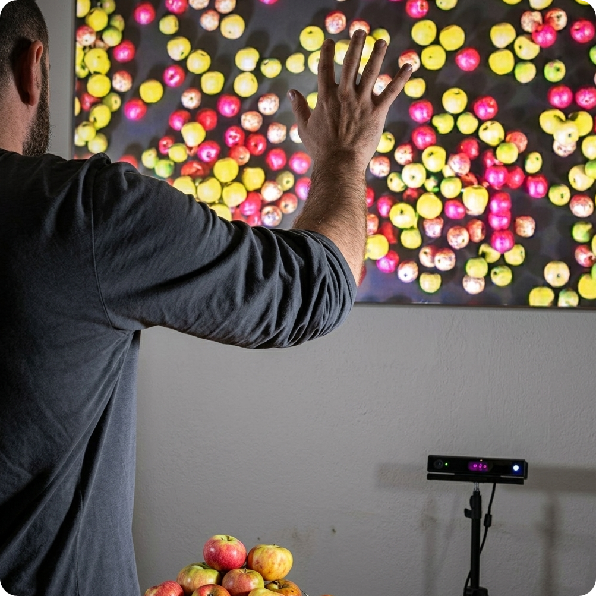
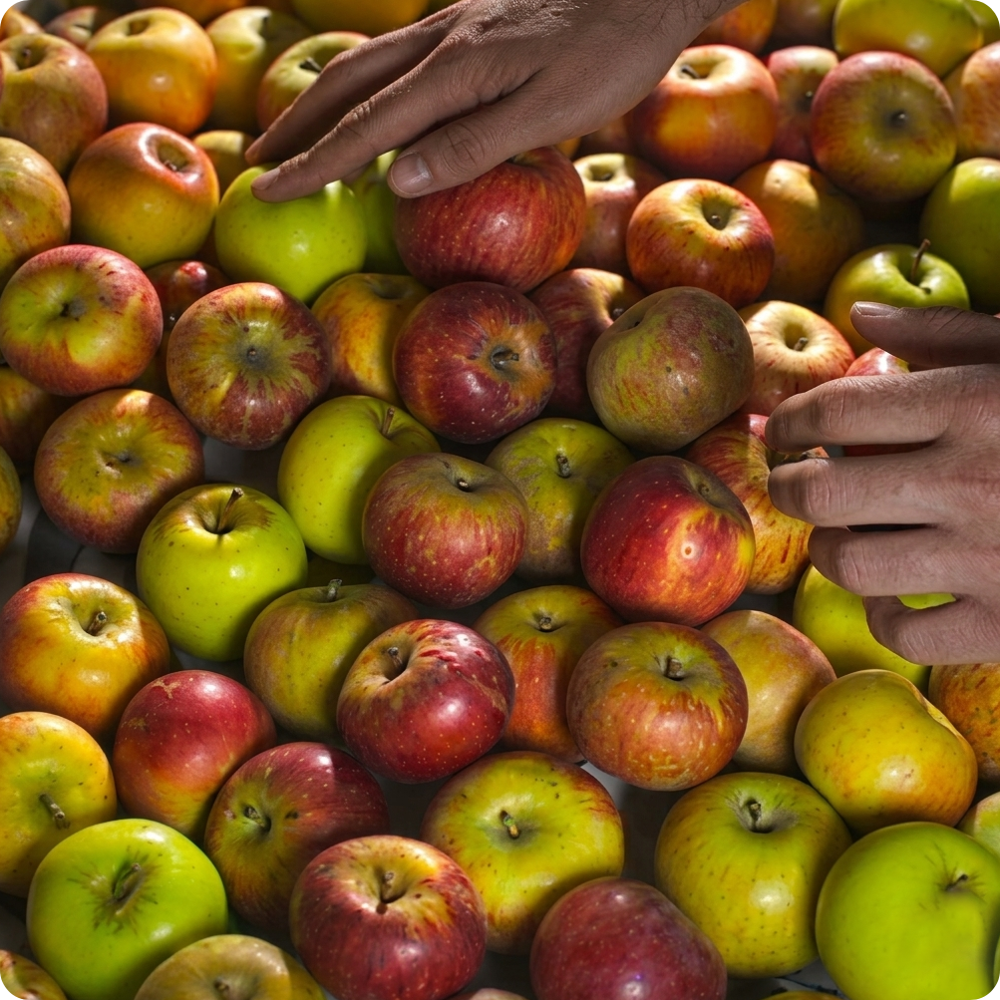
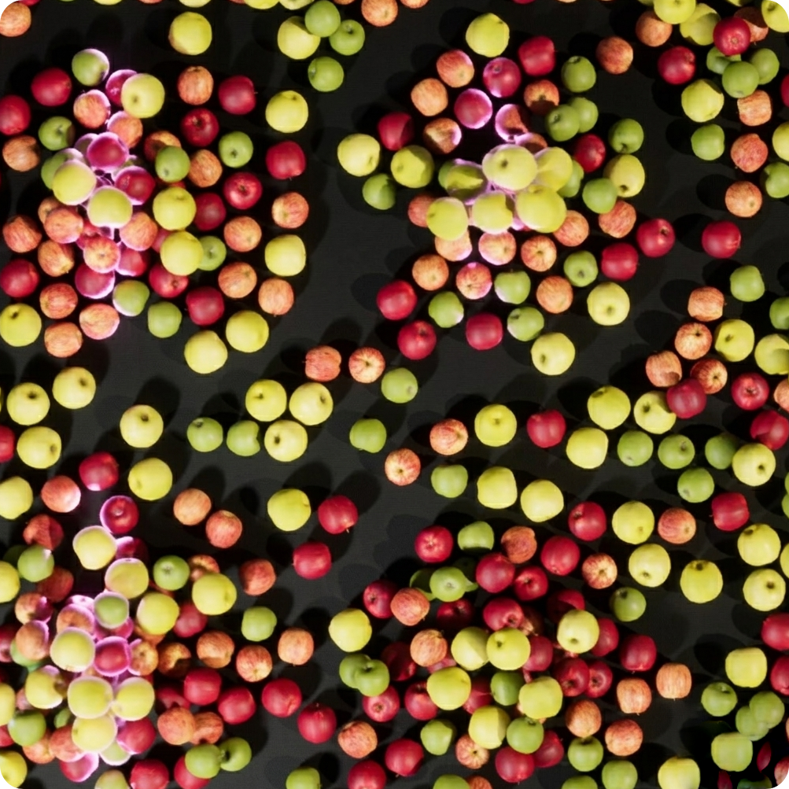

THE APPLE SYMPHONY
A tactile bridge between the orchard and the interface. Where organic matter meets digital sound.

Move your cursor through the orchard to stir the apples.
Strike the piano keys to send a brief physical impulse.
Enable your webcam for hand gestures.
How to Play
Three ways to interact with the Apple Symphony
Mouse Vortex
No setup required-
1
Scroll to the Algorithmic Orchard section.
-
2
Move your mouse over the 3D scene to create a vortex.
-
3
Apples will swirl, lift, and scatter around your cursor.
Piano Keys
Click or touch-
1
Click any key above to play a note (C3 to C5).
-
2
Each note sends a physical shockwave through the orchard.
-
3
Works with mouse and multi-touch screens.
Optical Control
Webcam required-
1
Initialize tracking and position fingertips over keys.
-
2
Curl finger to play a note. Use pinch for the thumb.
-
3
Your index finger controls the 3D vortex directly.
-
4
Make a fist and move your hand up or down to scroll the page.
Pro Tip: Use good lighting and stay 30–60cm from the camera. The view is mirrored for intuitive spatial mapping.
Cinematic Showcase
The organic symphony in motion
The Philosophy of Interaction
An experimental interface where a pile of real apples becomes a playable, touch-sensitive piano. Each section of the fruit cluster triggers a musical note, transforming organic matter into an instrument.

Digital Mirror
A projected 3D apple environment mirrors the user’s hand movements in real time.
Utilizing high-fidelity hand-mesh tracking to bridge the gap between physical gesture and digital reaction.

Tactile Fusion
The physical and digital worlds blend into one tactile, immersive performance.
Experience the synergy of organic materials and digital synthesis, where every touch resonates through the virtual orchard.

Expressive Motion
A study in playful interaction, natural materials, and expressive motion.
Dynamic physics simulations powered by Cannon.js bring weight and consequence to every digital apple in the container.